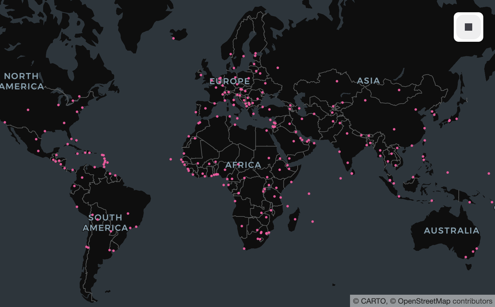

GeoArrow 0.2 Release
We released the first version of the GeoArrow specification (v0.1) in September 2023. Since then we’ve learned from the numerous integrations implemented by ourselves and others in the spatial community that highlighted ambiguities in the text of the first version and use-cases that necessitated changes to the specification. In this post we highlight new updates to the specification, updates to implementations, and community-driven integrations since the last specification release.
Specification
The GeoArrow specification establishes conventions for representing spatial data in Apache Arrow formats (e.g., C Data Interface, Serialized IPC) and implementations (e.g., PyArrow, Arrow C++, arrow-rs). It is separated into two parts:
- A set of memory layouts to represent geometry arrays using features of the Arrow type system/format (e.g., points can be represented as a
struct<x: double, y: double>) instead of serialized into well-known binary or some other binary format. - A set of extension type definitions to propagate type-level spatial metadata (e.g., coordinate reference system, edge interpolation)
Notable changes
In addition to some minor updates to improve clarity, GeoArrow 0.2 includes a few notable changes.
New array types
The GeoArrow 0.2 specification formalizes three new array types:
- The Box memory layout represents an array of axis-aligned bounding boxes, represented as an Arrow struct.
- The Geometry memory layout allows arbitrary geometries to be represented within a single array, even when the geometry type differs across rows. It’s implemented as an Arrow union of the other native encodings.
- The Geometry Collection memory layout allows arbitrary geometries to be represented within a single feature. It uses an Arrow list around an Arrow union.
Coordinate Reference System updates
The language defining the content of the "crs" key in the extension metadata was updated to simplify the dependency requirements of producers that did not have a built-in ability to produce PROJJSON, which was previously the only option allowed by the specification.
Most producers of GeoArrow metadata have the ability to write PROJJSON and should continue to do so. However, other producers are now allowed to pass on whatever information they do have as a string.
For cases where the producer knows exactly how it serializes the CRS, the optional "crs_type" field was added and can take on the value "authority_code", "srid", "projjson", or "wkt2:2019". Among other use cases, this enabled the C++ implementation of the Parquet GEOMETRY type to losslessly pass on all the information stored in a Parquet logical type annotation for GEOMETRY or GEOGRAPHY in a dependency-sensitive environment.
PROJJSON example
{ "crs": {"$schema":"https://proj.org/schemas/v0.7/projjson.schema.json","type":"ProjectedCRS","name":"WGS 84 / UTM zone 20N","base_crs":{"name":"WGS 84","datum_ensemble":{"name":"World Geodetic System 1984 ensemble","members":[{"name":"World Geodetic System 1984 (Transit)","id":{"authority":"EPSG","code":1166}},{"name":"World Geodetic System 1984 (G730)","id":{"authority":"EPSG","code":1152}},{"name":"World Geodetic System 1984 (G873)","id":{"authority":"EPSG","code":1153}},{"name":"World Geodetic System 1984 (G1150)","id":{"authority":"EPSG","code":1154}},{"name":"World Geodetic System 1984 (G1674)","id":{"authority":"EPSG","code":1155}},{"name":"World Geodetic System 1984 (G1762)","id":{"authority":"EPSG","code":1156}},{"name":"World Geodetic System 1984 (G2139)","id":{"authority":"EPSG","code":1309}},{"name":"World Geodetic System 1984 (G2296)","id":{"authority":"EPSG","code":1383}}],"ellipsoid":{"name":"WGS 84","semi_major_axis":6378137,"inverse_flattening":298.257223563},"accuracy":"2.0","id":{"authority":"EPSG","code":6326}},"coordinate_system":{"subtype":"ellipsoidal","axis":[{"name":"Geodetic latitude","abbreviation":"Lat","direction":"north","unit":"degree"},{"name":"Geodetic longitude","abbreviation":"Lon","direction":"east","unit":"degree"}]},"id":{"authority":"EPSG","code":4326}},"conversion":{"name":"UTM zone 20N","method":{"name":"Transverse Mercator","id":{"authority":"EPSG","code":9807}},"parameters":[{"name":"Latitude of natural origin","value":0,"unit":"degree","id":{"authority":"EPSG","code":8801}},{"name":"Longitude of natural origin","value":-63,"unit":"degree","id":{"authority":"EPSG","code":8802}},{"name":"Scale factor at natural origin","value":0.9996,"unit":"unity","id":{"authority":"EPSG","code":8805}},{"name":"False easting","value":500000,"unit":"metre","id":{"authority":"EPSG","code":8806}},{"name":"False northing","value":0,"unit":"metre","id":{"authority":"EPSG","code":8807}}]},"coordinate_system":{"subtype":"Cartesian","axis":[{"name":"Easting","abbreviation":"E","direction":"east","unit":"metre"},{"name":"Northing","abbreviation":"N","direction":"north","unit":"metre"}]},"scope":"Navigation and medium accuracy spatial referencing.","area":"Between 66°W and 60°W, northern hemisphere between equator and 84°N, onshore and offshore. Anguilla. Antigua and Barbuda. Bermuda. Brazil. British Virgin Islands. Canada - New Brunswick; Labrador; Nova Scotia; Nunavut; Prince Edward Island; Quebec. Dominica. Greenland. Grenada. Guadeloupe. Guyana. Martinique. Montserrat. Puerto Rico. St Kitts and Nevis. St Barthelemy. St Lucia. St Maarten, St Martin. St Vincent and the Grenadines. Trinidad and Tobago. Venezuela. US Virgin Islands.","bbox":{"south_latitude":0,"west_longitude":-66,"north_latitude":84,"east_longitude":-60},"id":{"authority":"EPSG","code":32620}}, "crs_type": "projjson" }WKT2 example:
{ "crs": 'PROJCRS["WGS 84 / UTM zone 20N",BASEGEOGCRS["WGS 84",ENSEMBLE["World Geodetic System 1984 ensemble",MEMBER["World Geodetic System 1984 (Transit)"],MEMBER["World Geodetic System 1984 (G730)"],MEMBER["World Geodetic System 1984 (G873)"],MEMBER["World Geodetic System 1984 (G1150)"],MEMBER["World Geodetic System 1984 (G1674)"],MEMBER["World Geodetic System 1984 (G1762)"],MEMBER["World Geodetic System 1984 (G2139)"],MEMBER["World Geodetic System 1984 (G2296)"],ELLIPSOID["WGS 84",6378137,298.257223563,LENGTHUNIT["metre",1]],ENSEMBLEACCURACY[2.0]],PRIMEM["Greenwich",0,ANGLEUNIT["degree",0.0174532925199433]],ID["EPSG",4326]],CONVERSION["UTM zone 20N",METHOD["Transverse Mercator",ID["EPSG",9807]],PARAMETER["Latitude of natural origin",0,ANGLEUNIT["degree",0.0174532925199433],ID["EPSG",8801]],PARAMETER["Longitude of natural origin",-63,ANGLEUNIT["degree",0.0174532925199433],ID["EPSG",8802]],PARAMETER["Scale factor at natural origin",0.9996,SCALEUNIT["unity",1],ID["EPSG",8805]],PARAMETER["False easting",500000,LENGTHUNIT["metre",1],ID["EPSG",8806]],PARAMETER["False northing",0,LENGTHUNIT["metre",1],ID["EPSG",8807]]],CS[Cartesian,2],AXIS["(E)",east,ORDER[1],LENGTHUNIT["metre",1]],AXIS["(N)",north,ORDER[2],LENGTHUNIT["metre",1]],USAGE[SCOPE["Navigation and medium accuracy spatial referencing."],AREA["Between 66°W and 60°W, northern hemisphere between equator and 84°N, onshore and offshore. Anguilla. Antigua and Barbuda. Bermuda. Brazil. British Virgin Islands. Canada - New Brunswick; Labrador; Nova Scotia; Nunavut; Prince Edward Island; Quebec. Dominica. Greenland. Grenada. Guadeloupe. Guyana. Martinique. Montserrat. Puerto Rico. St Kitts and Nevis. St Barthelemy. St Lucia. St Maarten, St Martin. St Vincent and the Grenadines. Trinidad and Tobago. Venezuela. US Virgin Islands."],BBOX[0,-66,84,-60]],ID["EPSG",32620]]', "crs_type": "wkt2:2019", }Authority code example:
{ "crs": "EPSG:32620", "crs_type": "authority_code", }Note that this should only be used as a last resort. Producers should prefer writing a complete description of the CRS.
SRID example:
{ "crs": "32620", "crs_type": "srid", }Note that this should only be used as a last resort for database drivers or readers that have no other option.
Opaque CRS example:
{ "crs": 'PROJCS["WGS 84 / UTM zone 20N",GEOGCS["WGS 84",DATUM["WGS_1984",SPHEROID["WGS 84",6378137,298.257223563,AUTHORITY["EPSG","7030"]],AUTHORITY["EPSG","6326"]],PRIMEM["Greenwich",0,AUTHORITY["EPSG","8901"]],UNIT["degree",0.0174532925199433,AUTHORITY["EPSG","9122"]],AUTHORITY["EPSG","4326"]],PROJECTION["Transverse_Mercator"],PARAMETER["latitude_of_origin",0],PARAMETER["central_meridian",-63],PARAMETER["scale_factor",0.9996],PARAMETER["false_easting",500000],PARAMETER["false_northing",0],UNIT["metre",1,AUTHORITY["EPSG","9001"]],AXIS["Easting",EAST],AXIS["Northing",NORTH],AUTHORITY["EPSG","32620"]]', }Opaque CRS strings should only be used as a last resort when the producer has no way to communicate more information. In this case, the CRS is a WKT1 string, which doesn’t fit into any other allowed variants.
Newly-supported data types for WKT and WKB arrays
Version 1.4 of the Arrow Columnar format added “binary view” and “string view” layouts. This new representation for an array of strings or bytes is widely held to be more performant for common use cases.
GeoArrow 0.2 allows serialized Well-Known Binary (WKB) and Well-Known Text (WKT) arrays to be backed by these new binary view and string view data types.
Edge interpolations
In the previous version of the specification, the "edges" parameter could have been omitted (to indicate planar/linear edges as defined by simple features) or taken the value "spherical" to indicate that vertices should be connected by approximating the edge as the shortest path on a perfect sphere. The recently added GEOMETRY and GEOGRAPHY types in Parquet and Iceberg, included four other options to handle Ellipsoidal edges: "vincenty", "thomas", "andoyer", and "karney". We also added these to GeoArrow such that it can faithfully represent the intent of an arbitrary Parquet and/or Iceberg source.
Suggestion to use separated coordinate layout
GeoArrow supports two coordinate representations, separated and interleaved, for maximum compatibility with how different systems may wish to store coordinates.
While both coordinate representations continue to be supported, we now recommend the separated representation for most use cases.
Implementations
Several GeoArrow implementations have been updated to support new features in GeoArrow 0.2.
Keep in mind that the implementation status here is current as of May 2025. If reading this in the future, refer also to individual projects for the most up-to-date information.
Rust
geoarrow-rs, the Rust implementation of GeoArrow, has been undergoing a large refactor from a single, overly-monolithic crate to a monorepo of smaller crates, each with a more well-defined scope. These smaller crates better communicate which parts of the project are production ready and which parts are more prototypical.
geoarrow-rs is now split into the following crates:
geoarrow-schema: GeoArrow geometry type and metadata definitions.geoarrow-array: GeoArrow array definitions.geoarrow-cast: Functions for converting from one GeoArrow geometry type to another.
These core crates are relatively stable and support the full GeoArrow 0.2 specification.
Additional crates are under development but not quite released for public usage. Native Rust integration with GeoParquet will be released soon. Support for other file formats like FlatGeobuf, GeoJSON, CSV, and Shapefile is under development, as are geometry operations backed by the geo crate or by linking to GEOS.
C/C++
The geoarrow project also includes C/C++ bindings to produce and consume GeoArrow arrays from C based languages. The scope of geoarrow-c is more limited than that of geoarrow-rust; however, it does include a purpose-built WKT/WKB reader/writer and can cast those to and from native encodings. To maximize usability, geoarrow-c can be amalgamated into a single .c/.h pair depending only on nanoarrow (which also can be amalgamated into a single .c/.h pair).
The latest release of geoarrow-c supports the full GeoArrow 0.2 specification (with the exception of union types) and includes experimental new C++ helpers to make it more ergonomic to work with GeoArrow arrays passed over the Arrow C Data Interface in C++.
Python
The Initial geoarrow-pyarrow implementation depended completely on geoarrow’s C implementation for almost everything; however it quickly became clear that a PyArrow-native implementation was what potential importers/exporters of GeoArrow in Python were actually looking for. The result was two packages:
geoarrow-types, which provides an pure Python implementation of the GeoArrow type system and PyArrow-native extension type implementation.geoarrow-pyarrow, which provides compute functions and IO tools that use PyArrow data structures for input/output but use various GeoArrow implementations under the hood to do the actual crunching.
The changes since the 0.1 release were mostly structural; however new spec features were also added including support for the box type and support for non-PROJJSON CRS encodings.
Whereas geoarrow-pyarrow and geoarrow-types are aimed squarely at the PyArrow ecosystem, geoarrow-rust provides an experimental set of compute and IO functions with input/output based on the Arrow PyCapsule Interface. As the project evolves, we envison synergy among these projects to provide magical interoperability and spatial compute capability to pyarrow users and beyond.
R
The GeoArrow R bindings provide integration between the r-spatial ecosystem (e.g., the sf package) and the Arrow ecosystems (e.g., the arrow and nanoarrow packages).
The latest geoarrow-r release includes updated geoarrow-c internals and support for features of the GeoArrow 0.2 specification (except union types).
Data
GeoArrow’s 0.2 series of releases includes brand new revamped example data, the pipeline for which was completely rewritten to be mostly in Python using geoarrow-rs’s excellent Python bindings, geoarrow-python, geopandas, and duckdb-spatial. The new pipeline made it easier to generate more formats and more examples to cover some of the concepts highlighted by our first year of on-the-ground experience with the format. A few highlights include:
- Most examples are now available in FlatGeoBuf, GeoParquet’s WKB and Native encodings, Parquet’s brand-new GEOMETRY logical type, and GeoArrow IPC streams with the WKT, WKB, native/interleaved, and native/separated encodings where appropriate.
- Coordinate Reference System (CRS) examples were added to cover various CRS encodings and categories that implementations may wish to consider.
- USGS Map Quadrangles were added to illustrate the utility of/test the new “box” encoding that was added in the 0.2 release.
- Several examples based on the Natural Earth project were added, including an example with spherical edges/geography data type that can be used as a basic example to illustrate/test global data handling.
The latest data is available from the geoarrow.org data page and the sources can be found at the geoarrow/geoarrow-data GitHub repository.
Ecosystem
GeoPandas
In the landmark GeoPandas 1.0 release, the GeoSeries and GeoDataFrame added from_arrow() and to_arrow() methods to import and export Python objects using the Arrow PyCapsule Interface.
import pyarrow as pa
import geoarrow.pyarrow as ga
from geoarrow.rust.io import read_flatgeobuf
import geopandas
url = "https://raw.githubusercontent.com/geoarrow/geoarrow-data/v0.2.0/natural-earth/files/natural-earth_cities.fgb"
table_rs = read_flatgeobuf(url)
df = geopandas.GeoDataFrame.from_arrow(table_rs)
df.head(5)
#> name geometry
#> 0 Vatican City POINT (12.45339 41.90328)
#> 1 San Marino POINT (12.44177 43.9361)
#> 2 Vaduz POINT (9.51667 47.13372)
#> 3 Lobamba POINT (31.2 -26.46667)
#> 4 Luxembourg POINT (6.13 49.61166)
pa.table(df.to_arrow())
#> pyarrow.Table
#> name: string
#> geometry: extension<geoarrow.wkb<WkbType>>
#> ----
#> name: [["Vatican City","San Marino","Vaduz","Lobamba","Luxembourg",...,
#> geometry: [[010100000054E57B4622E828408B074AC09EF34440,0101000000DC...For more information, see the excellent GeoPandas documentation:
Thanks to @jorisvandenbossche and @kylebarron, for driving this integration!
Lonboard
What’s a fast geospatial skateboard? A lonboard, of course! Powered by deck.gl, lonboard can effortlessly render millions of features on an interactive map. The rendering is powered by GeoArrow’s native encodings and the GeoArrow extension types power geometry column detection and on-the-fly reprojection to ensure multiple layers are plotted together properly. The viz() one-liner works on any Arrow-ish Python object and is a massive quality-of-life improvement when working with large-ish data in a notebook.
import geoarrow.pyarrow.io
from lonboard import viz
url = "https://raw.githubusercontent.com/geoarrow/geoarrow-data/v0.2.0/natural-earth/files/natural-earth_cities.fgb"
viz(geoarrow.pyarrow.io.read_pyogrio_table(url))
All credit here to @kylebarron for creating and maintaining this tool!
DuckDB
It has long been a confusion for users of DuckDB’s fantastic spatial extension that a query like SELECT st_geomfromtext('LINESTRING (0 1, 2 3)'), when converted to PyArrow or R’s arrow package, contains no indication of any geometry column. The column that does appear in the output contains DuckDB spatial’s internal serialization and is in general not that useful.
In DuckDB 1.2, core developers added support for extensions to control Arrow import/export, which opened the door for the spatial extension to accept GeoArrow extensions and roundtrip the geometry type through DuckDB’s much used Arrow integration in Python, R, and ADBC. Among other libraries supporting GeoArrow, this powers seamless integration between GeoPandas and DuckDB.
import geopandas
import duckdb
duckdb.load_extension("spatial")
duckdb.sql("CALL register_geoarrow_extensions()")
# Create a GeoDataFrame
url = "https://raw.githubusercontent.com/geoarrow/geoarrow-data/v0.2.0/natural-earth/files/natural-earth_cities.fgb"
df = geopandas.read_file(url)
# Create the Arrow table and use select directly from it with DuckDB
df_arrow = df.to_arrow()
duckdb.sql("SELECT * FROM df_arrow").limit(5)
#> ┌──────────────┬────────────────────────────────┐
#> │ name │ geometry │
#> │ varchar │ geometry │
#> ├──────────────┼────────────────────────────────┤
#> │ Vatican City │ POINT (12.4533865 41.9032822) │
#> │ San Marino │ POINT (12.4417702 43.9360958) │
#> │ Vaduz │ POINT (9.5166695 47.1337238) │
#> │ Lobamba │ POINT (31.1999971 -26.4666675) │
#> │ Luxembourg │ POINT (6.1300028 49.6116604) │
#> └──────────────┴────────────────────────────────┘
# Going the other direction, call from_arrow() directly on a DuckDB result
geopandas.GeoDataFrame.from_arrow(duckdb.sql("SELECT * FROM df_arrow")).head(5)
#> name geometry
#> 0 Vatican City POINT (12.45339 41.90328)
#> 1 San Marino POINT (12.44177 43.9361)
#> 2 Vaduz POINT (9.51667 47.13372)
#> 3 Lobamba POINT (31.2 -26.46667)
#> 4 Luxembourg POINT (6.13 49.61166)For several more examples and a deeper dive in to DuckDB spatial in Python, see Max Gabrielsson’s excellent GeoPython 2025 tutorial.
Special thanks to @Maxxen, @pdet, and @ianmcook for the PRs, reviews, and coordination to get this feature over the finish line!
Apache Sedona
Apache Sedona’s 1.6.0 release added dataframe_to_arrow() in its Python bindings and its 1.7.0 release added an Arrow-powered create_spatial_dataframe() creator to accellerate the Sedona–GeoPandas integration. In addition to better performance when converting between GeoPandas and Spark, this change accellerated visualization of Spark DataFrames with Geometry and general integration with tools that support GeoArrow.
import geopandas
import lonboard
from sedona.spark import SedonaContext
from sedona.utils.geoarrow import create_spatial_dataframe, dataframe_to_arrow
url = "https://raw.githubusercontent.com/geoarrow/geoarrow-data/v0.2.0/natural-earth/files/natural-earth_cities.fgb"
df = geopandas.read_file(url)
config = SedonaContext.builder().getOrCreate()
sedona = SedonaContext.create(config)
sedona_df = create_spatial_dataframe(sedona, df)
sedona_df.printSchema()
#> root
#> |-- name: string (nullable = true)
#> |-- geometry: geometry (nullable = true)
lonboard.viz(dataframe_to_arrow(sedona_df))These integrations were made possible by backporting the forthcoming toArrow() in Spark 4.0 and the forthcoming ability of createDataFrame() to accept Arrow objects directly.
Thanks to @ianmcook for driving these changes in the Spark project and thanks to @jiayuasu and @Imbruced for reviewing/integrating these changes into Sedona!
GDAL
GDAL added its first Arrow integration in RFC 86. This integration added a C API to work around the performance limitations of OGR’s row-based reader and was picked up by pyogrio almost immediately to enable faster IO - particularly for GeoPackage and FlatGeoBuf - for geopandas users. About a year later a matching write API was added and was used by GDAL itself to speed up its popular ogr2ogr command-line interface. Most recently, GDAL 3.11.0 added an Arrow Database Connectivity (ADBC) integration to read geometry columns from ADBC-integrated datasources like PostGIS and DuckDB.
Specifically related to the GeoArrow specification, GDAL 3.8.0 included the ability to export geometry through its Arrow interface with GeoArrow type and CRS metadata. This makes it substantially easier to propagate the CRS of a geometry column when using OGR’s GetArrowStream() interface by passing the GEOMETRY_METADATA_ENCODING=GEOARROW layer option. When this option is set, geometry columns are marked with the geoarrow.wkb extension type with the appropriate "crs" in the extension metadata.
Full credit to @rouault for implementing these changes in the GDAL project!
What’s next?
We’re thrilled that the GeoArrow specification has unlocked interoperability among spatial libraries and that the specification continues to evolve to serve the needs of the rapidly evolving spatial ecosystem. We’ve had discussions about how to represent raster data and how to integrate discrete global grids like S2 and H3…we look forward to continuing to grow the community and we’re excited to see where it will go!